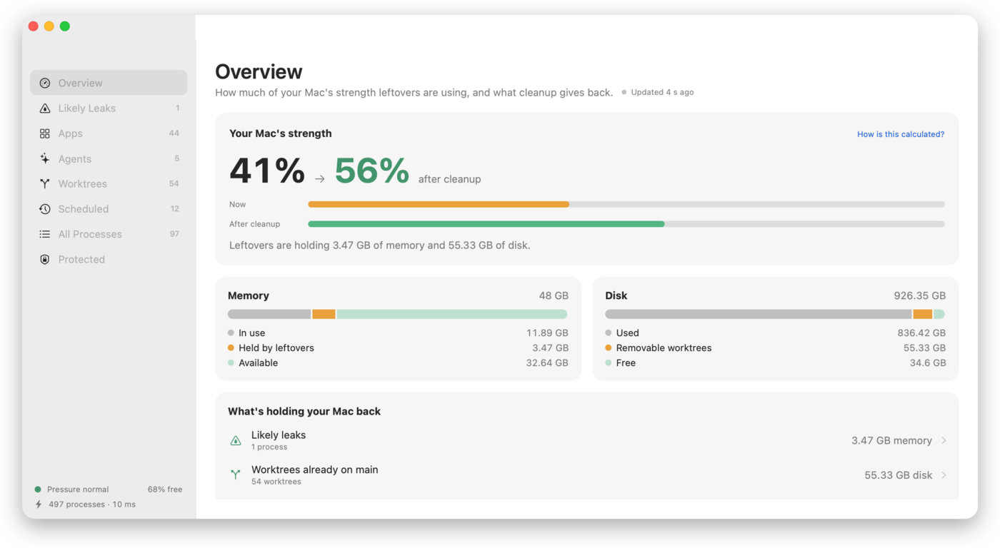

How strong is your Mac right now?
Leftovers adds up what the leftovers are costing you in memory, swap and disk, and shows your Mac's strength now next to what a safe cleanup gives back. On the Mac it was built on: 41% now, 56% after cleanup.
It's an honest estimate, with the formula one click away: half memory available, a third swap, a fifth free disk.
